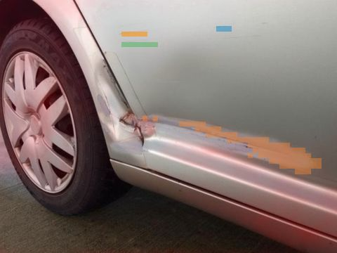

Condición (solo para el revisor): C0 · etiqueta controlada: SUPPORTED

En la fotografía del vehículo, no es correcto afirmar que el vehículo no presenta piezas rotas. La observación se refiere al vehículo.
INSUFFICIENT — SUPPORTED: 0.589 · SUSPICIOUS: 0.410 · INSUFFICIENT: 0.001
U = 0.685 (τU = 0.679) · c̄ = 0.625 (τc = 0.000)
Se abstuvo: incertidumbre U=0.685 > τU=0.679
| nodo | tipo | g | c,q,r,u |
|---|---|---|---|
| 0 | claim | 0.230 | [0.25, 1.0, 0.9416, 0.0228] |
| 1 | source | 0.941 | [1.0, 0.9405, 1.0, 0.0] |
| 2 | visual | 0.002 | [1.0, 0.094, 0.3333, 0.9251] |
| 3 | visual | 0.001 | [1.0, 0.0464, 0.3333, 0.9554] |
| 4 | visual | 0.002 | [1.0, 0.0831, 0.3333, 0.9144] |
| 5 | visual | 0.002 | [1.0, 0.0539, 0.3333, 0.9068] |
| 6 | visual | 0.029 | [1.0, 0.5884, 0.3162, 0.8413] |
| 7 | forensic | 0.117 | [1.0, 0.9405, 0.2776, 0.5524] |
| origen | destino | relación | peso g·p |
|---|---|---|---|
| 0 | 2 | unknown | 0.002 |
| 0 | 3 | unknown | 0.001 |
| 0 | 4 | unknown | 0.002 |
| 0 | 5 | unknown | 0.001 |
| 0 | 6 | unknown | 0.029 |
| 2 | 4 | overlap | 0.002 |